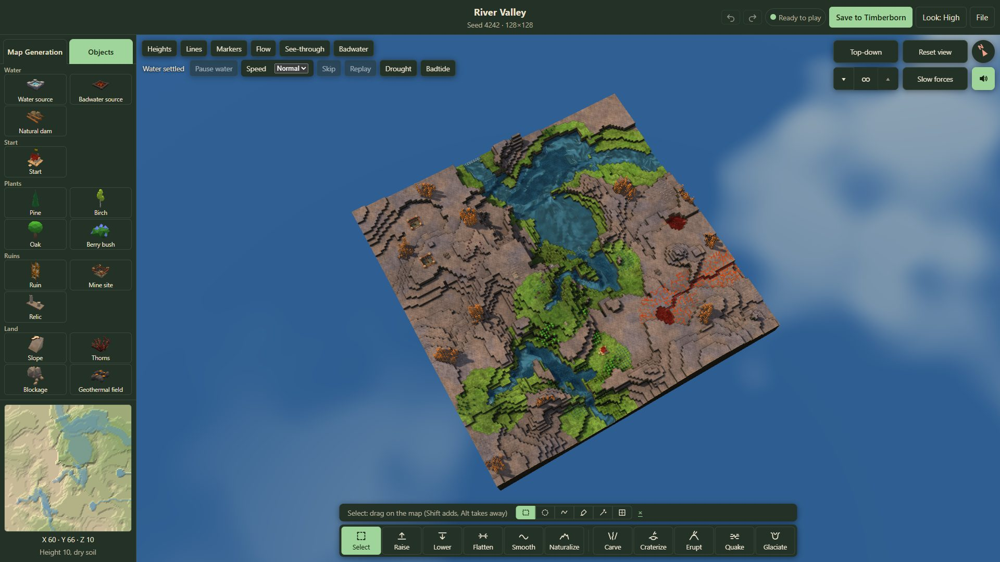
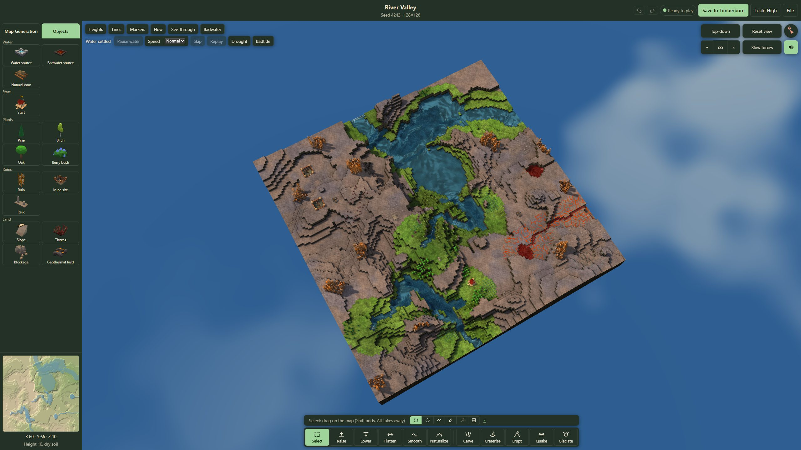
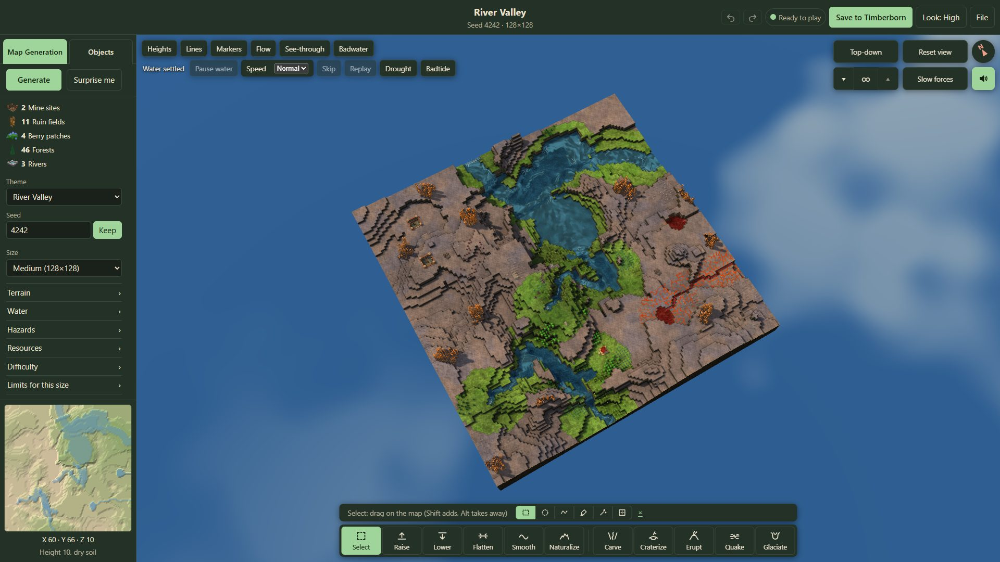
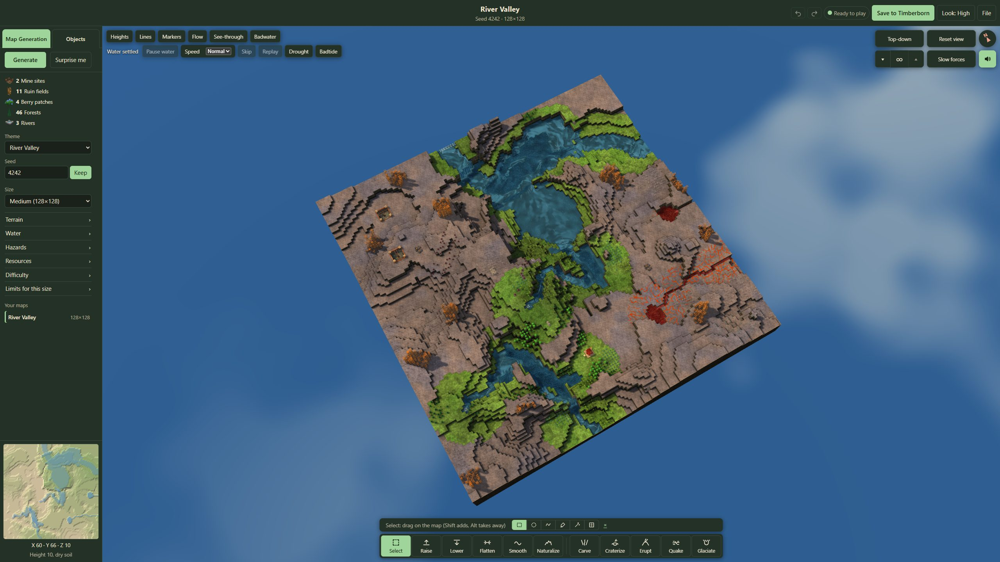
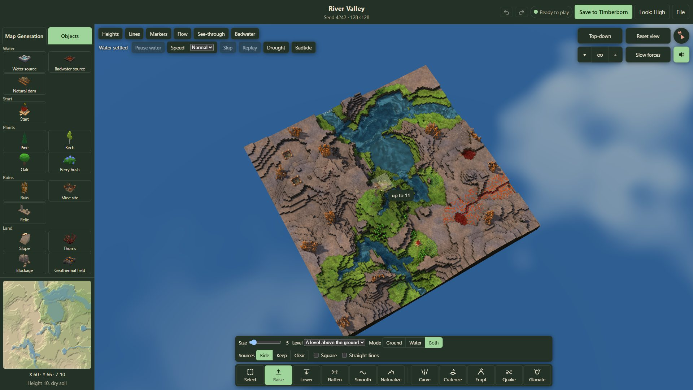
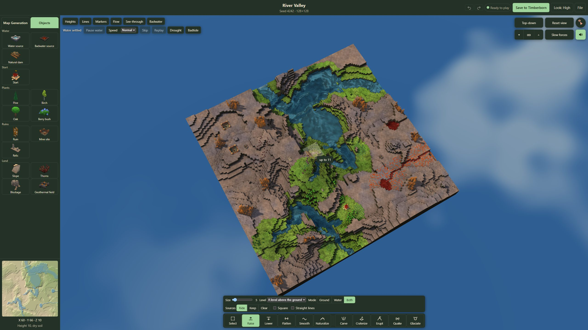
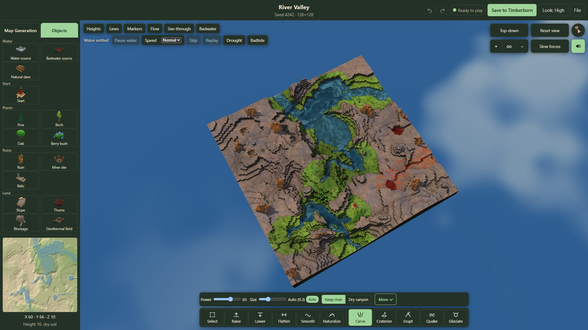
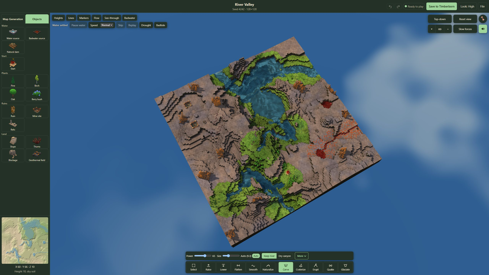
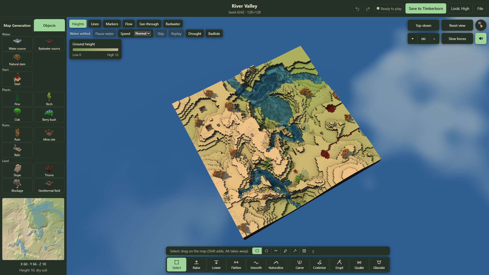
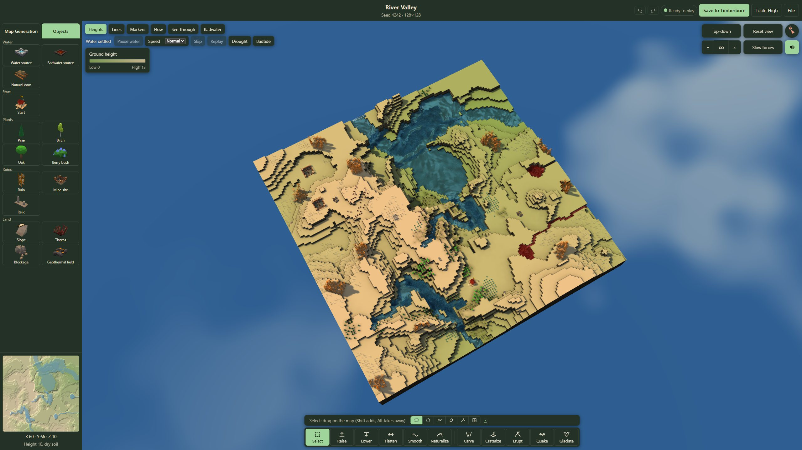

Layout 2 mockups, round 3
River Valley 4242 at 128×128, the High look, at 1920×1080 and 2560×1440. The real page rearranged: a 262px left column with two tabs (the objects in five named groups, two to a row, each picture over its name) over a fixed footer of the minimap, the coordinates and the readout; the Show toggles with the water controls under them at the top left; the camera group at the top right; one bar at the bottom middle with the held tool's settings above it. Click a picture for full size. What doesn't fit the brief is listed in DESIGN.md, "Layout 2 mockups".
1. The Objects tab, Select in hand




2. The Map Generation tab




3. Raise picked: its settings above the bar




4. Carve picked




5. Heights on, with its legend



